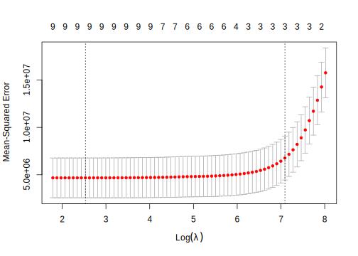

12.5 Computation in R
12.5.1 General Neural Network
Swine Disease Breakout Data to show how to train neural network models using caret package.
# run the next line to install DataScienceR package
# devtools::install_github("happyrabbit/DataScienceR")
library(DataScienceR)##
## Attaching package: 'DataScienceR'## The following object is masked _by_ '.GlobalEnv':
##
## multiplotdata("sim1_da1")
trainx = dplyr::select(sim1_da1, -y)
trainy = paste0("BREAK",sim1_da1$y)Set the tuning grid. The tuning parameters are weight, the number of hidden layers and the number of hidden units. decay is the weight decay, and there are three tuning values. size is the number of hidden units.
library(caret)
nnetGrid <- expand.grid(decay = c(0, 0.01, .1),
size = c(1:10))
# get the maximum number of hidden units
maxSize <- max(nnetGrid$size)
# compute the maximum number of parameters
# there are M(p+1)+M+1 parameters in total
numWts <- 1*(maxSize * (length(trainx) + 1) + maxSize + 1)
# set a random seed to ensure repeatability
set.seed(2017)You can use trainControl() function to customize the process of selecting tuning/complexity parameters and building the final model. More information about trainControl see “Customizing the Tuning Process.”
ctrl <- trainControl(method = "cv", # corss-validation
number = 10, # 10 folds
classProbs = TRUE, # report class probability
summaryFunction = twoClassSummary # return AUC
)Next, past those control setting to train():
nnetTune <- train(trainx, trainy,
method = "nnet", # train neural network using `nnet` package
tuneGrid = nnetGrid, # tuning grid
trControl = ctrl, # process customization set before
preProc = c("center", "scale"), # standardize data
trace = FALSE, # hide the training trace
MaxNWts = numWts, # maximum number of weight
maxit = 500 # maximum iteration
)The results show that the optimum number of hidden units is 1 and the decay parameter is 0.1：
nnetTune## Neural Network
##
## 800 samples
## 240 predictors
## 2 classes: 'BREAK0', 'BREAK1'
##
## Pre-processing: centered (240), scaled (240)
## Resampling: Cross-Validated (10 fold)
## Summary of sample sizes: 720, 720, 720, 720, 720, 720, ...
## Resampling results across tuning parameters:
##
## decay size ROC Sens Spec
## 0.00 1 0.8795739 0.8071429 0.8000000
## 0.00 2 0.8847744 0.8190476 0.8263158
## 0.00 3 0.8710526 0.8142857 0.7894737
## 0.00 4 0.8666667 0.8166667 0.8078947
## 0.00 5 0.8128759 0.7547619 0.7552632
## 0.00 6 0.8096491 0.7785714 0.7473684
## 0.00 7 0.8179825 0.7642857 0.7894737
## 0.00 8 0.8029449 0.8023810 0.7526316
## 0.00 9 0.8017544 0.7738095 0.7447368
## 0.00 10 0.8314536 0.7880952 0.7578947
## 0.01 1 0.9323308 0.8738095 0.8236842
## 0.01 2 0.9334586 0.8690476 0.8263158
## 0.01 3 0.9329574 0.8690476 0.8210526
## 0.01 4 0.9121554 0.8428571 0.8000000
## 0.01 5 0.9318922 0.8642857 0.8105263
## 0.01 6 0.9289474 0.8642857 0.8105263
## 0.01 7 0.9305764 0.8690476 0.8131579
## 0.01 8 0.9281328 0.8690476 0.7973684
## 0.01 9 0.9303885 0.8785714 0.7921053
## 0.01 10 0.9320175 0.8666667 0.8184211
## 0.10 1 0.9344612 0.8642857 0.8263158
## 0.10 2 0.9332080 0.8666667 0.8236842
## 0.10 3 0.9325188 0.8690476 0.8184211
## 0.10 4 0.9322055 0.8785714 0.8131579
## 0.10 5 0.9285088 0.8619048 0.8078947
## 0.10 6 0.9311404 0.8714286 0.7921053
## 0.10 7 0.9308271 0.8714286 0.8052632
## 0.10 8 0.9317043 0.8785714 0.8078947
## 0.10 9 0.9327694 0.8690476 0.8052632
## 0.10 10 0.9296366 0.8738095 0.8052632
##
## ROC was used to select the optimal model using
## the largest value.
## The final values used for the model were size = 1
## and decay = 0.1.You can directly apply plot() function to get a visualization of the whole process:
plot(nnetTune)
12.5.2 Averaged Neural Network
Multiple local minimums will lead to unstable results. A solution is to use bootstrap samples and average the results. We can use the same function train() to train the averaged neural network with method = "avNNet".
# it takes some time to run
trainx = dplyr::select(sim1_da1, -y)
trainy = paste0("BREAK",sim1_da1$y)
avnnetGrid <- expand.grid(decay = c(0, 0.01, .1),
size = c(1:10),
bag = TRUE # indicate that we will use bootstrap
)
avnnetTune <- train(trainx, trainy,
method = "avNNet",
tuneGrid = avnnetGrid,
trControl = ctrl,
preProc = c("center", "scale"),
trace = FALSE,
MaxNWts = numWts,
maxit = 500)When the number of hidden units is 10, there are too many parameters in the model, so you will have the following warning:
In eval(expr, envir, enclos) :
model fit failed for Fold10: decay=0.00, size=10, bag=TRUE Error in { : task 1 failed - "too many (2432) weights"
But it won’t hurt the model tuning from size=1 to 9. We can see the optimum estimates are size = 3 and decay = 0.01：
avnnetTune## Model Averaged Neural Network
##
## 800 samples
## 240 predictors
## 2 classes: 'BREAK0', 'BREAK1'
##
## Pre-processing: centered (240), scaled (240)
## Resampling: Cross-Validated (10 fold)
## Summary of sample sizes: 720, 720, 720, 720, 720, 720, ...
## Resampling results across tuning parameters:
##
## decay size ROC Sens Spec
## 0.00 1 0.7805138 0.7333333 0.7000000
## 0.00 2 0.7957393 0.7238095 0.7263158
## 0.00 3 0.7912281 0.7380952 0.7000000
## 0.00 4 0.8109962 0.7738095 0.6947368
## 0.00 5 0.8039474 0.7547619 0.6815789
## 0.00 6 0.8094925 0.7452381 0.7263158
## 0.00 7 0.8208647 0.7523810 0.7289474
## 0.00 8 0.8104323 0.7928571 0.6973684
## 0.00 9 0.7916040 0.7380952 0.6947368
## 0.00 10 NaN NaN NaN
## 0.01 1 0.9124687 0.8476190 0.8263158
## 0.01 2 0.9010652 0.8357143 0.7973684
## 0.01 3 0.9213659 0.8523810 0.8157895
## 0.01 4 0.9173559 0.8357143 0.8342105
## 0.01 5 0.9153509 0.8309524 0.8210526
## 0.01 6 0.9058271 0.8380952 0.7894737
## 0.01 7 0.9166667 0.8476190 0.8157895
## 0.01 8 0.9065789 0.8309524 0.8157895
## 0.01 9 0.9167293 0.8309524 0.8289474
## 0.01 10 NaN NaN NaN
## 0.10 1 0.9125313 0.8380952 0.8078947
## 0.10 2 0.9124687 0.8571429 0.8078947
## 0.10 3 0.9136591 0.8404762 0.8105263
## 0.10 4 0.9124687 0.8285714 0.8157895
## 0.10 5 0.9170426 0.8428571 0.8184211
## 0.10 6 0.9103383 0.8285714 0.8052632
## 0.10 7 0.9119674 0.8547619 0.7921053
## 0.10 8 0.9036341 0.8404762 0.8052632
## 0.10 9 0.9117794 0.8380952 0.8184211
## 0.10 10 NaN NaN NaN
##
## Tuning parameter 'bag' was held constant at a value
## of TRUE
## ROC was used to select the optimal model using
## the largest value.
## The final values used for the model were size =
## 3, decay = 0.01 and bag = TRUE.12.5.3 Model Comparison
Let’s apply other models on the same dataset and compare the model results.
- Stochastic Gradient Boosting
trainx = dplyr::select(sim1_da1, -y)
trainy = sim1_da1$y
gbmGrid <- expand.grid(interaction.depth = seq(1, 7, by = 2),
n.trees = seq(100, 1000, by = 50),
shrinkage = c(0.01, 0.1),
n.minobsinnode = 5)
set.seed(2017)
gbmTune <- train(trainx, trainy,
method="gbm",
tuneGrid = gbmGrid,
verbose = FALSE)library(pROC)
pregbm <- predict(gbmTune, trainx)
roc(pregbm, trainy)##
## Call:
## roc.default(response = pregbm, predictor = trainy)
##
## Data: trainy in 426 controls (pregbm BREAK0) < 374 cases (pregbm BREAK1).
## Area under the curve: 0.9503The optimum result is AUC=0.9503.
- Group lasso logistic regression
The third model to try is group lasso logistic regression. It adds a group indicator to the lasso logistics regression which allows selecting variables within and across groups.
You can use cv_glasso() function from DataScienceR pacakge to tuning group lasso logistic regression:
# trainx contains the independent variables
trainx = dplyr::select(sim1_da1, -y)
# trainy is the response variable
trainy = sim1_da1$y
# get group index
index <- gsub("\\..*", "", names(trainx))
# tune over 100 parameter values
nlam <- 100
# set the model response
# - `link`：return value of link function
# - `response`：return the probability response (note: the real pobability number doesn't make sense but the rank does)
# number of cross-validation folds
kfold <- 10
cv_fit <- cv_glasso(trainx, trainy, nlam = nlam, kfold = kfold)cv_fit$lambda.max.auc lambda auc
1.0009576 0.9453094 The optimum tuning parameter is lambda=1，the optimum AUC=0.945. It is a little better than neural network. But it runs much faster and is interpretable. Here is a summary of the three models:
## nnet gbm lasso
## 0.93 0.95 0.95The three models perform similarly on this dataset. Stochastic gradient boosting and lasso is slightly better than neural network. Considering the computation time and model interpretability, I will choose group lasso logistic regression.